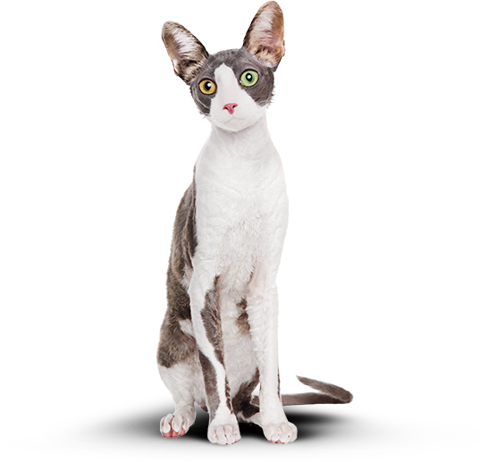
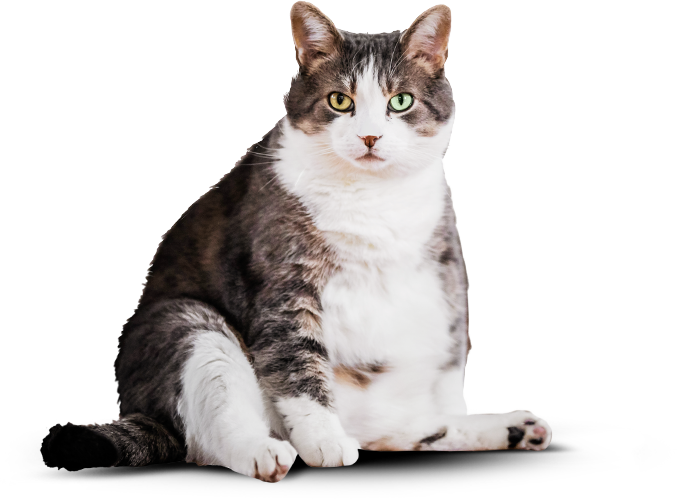

Функциональное
питание для котов
Занялся собой? Займись котом!

Похудение
Ваш кот весит больше собаки и почти утратил способность лазить по деревьям? Пора на диету! Cat Energy Slim поможет вашему питомцу сбросить лишний вес.

Похудение
Ваш кот весит больше собаки и почти утратил способность лазить по деревьям? Пора на диету! Cat Energy Slim поможет вашему питомцу сбросить лишний вес.
Как это работает
Функциональное питание содержит только полезные питательные вещества.
1
Выпускается в виде порошка, который нужно лишь залить кипятком и готово.
2
Замените один-два приема обычной еды на наше фунцкциональное питание.
3
Замените один-два приема обычной еды на наше фунцкциональное питание.
4
Живой пример
Борис сбросил 5 кг за 2 месяца, просто заменив свой обычный корм на Cat Energy Slim. Отличный результат без изнуряющих тренировок! При этом он не менял своих привычек и по-прежнему спит по 16 часов в день.
5 кг
снижение веса
60 дней
затрачено времени
Затраты на питание:
15 000 руб.
